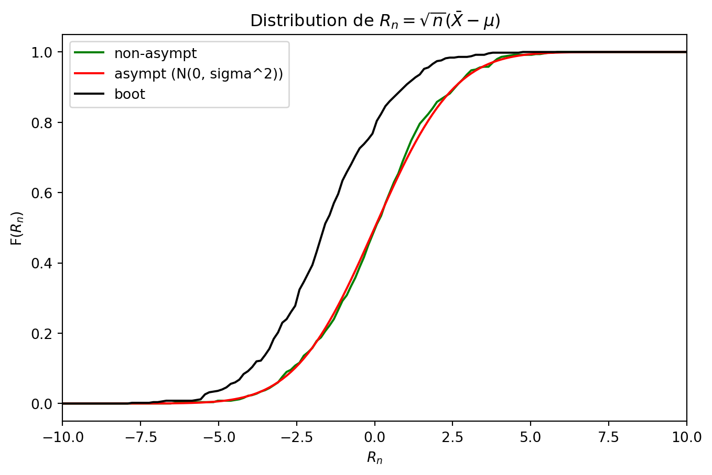

import numpy as np
data = np.array([1, 2, 3, 4, 5])
bootstrap_sample = np.random.choice(data, size=len(data), replace=True)
print(f"The bootstrap sample is: {bootstrap_sample}")The bootstrap sample is: [3 4 5 2 1]Jumbong Junior
The bootstrap method is a resampling technique proposed by Efron in 1980. First, it was introduced in order to estimate the variance of a statistic.
Given a sample \(\mathcal{X_n} = \{X_1, X_2, \ldots, X_n\}\), consisting of i.i.d. random variables drawn for an unknown distribution \(P\) , our goal is to estimate the distribution of the R(\(\mathbfcal{X_n}\),\(P\)).
In other words, given a sample \(\mathcal{X_n}\) from an unknown distribution \(P\), how can we estimate the distribution of a variable that depends on both sample and underlying law \(P\) ?
Estimating the law of R(\(\mathbfcal{X_n}\),\(P\)) without making parametric assumptions about the distribution \(P\).
Generating multiple new sample by randomly selecting values with replacement from the original sample \(\mathcal{X_n} = \{X_1, X_2, \ldots, X_n\}\).
Each new sample, known as bootstrap sample, has the sample size as the original sample. By repeating this process many times, we can create an empirical distribution \(P_n\) which serves as an approximation of the true distribution \(P\).
This empirical distribution allows us to estimate the distribution of the variable R(\(\mathbfcal{X_n}\),\(P\)), even if we do not know the true distribution \(P\).
We consider a probability space \((\Omega, \mathcal{F}, P)\).
Let \(\mathcal{X} = \{X_1, X_2, \ldots, X_n\}\) be a sample generated from an unknown distribution \(P\),
the cumulative distribution function (CDF) of P is defined as :
\[ F(x) = P(X_1 \leq x) \]
One way to estimate the CDF of P is to use the empirical distribution function, which is defined as : \[ F_n(x) = \frac{1}{n} \sum_{i=1}^{n} \mathbb{1}_{X_i \leq x} \]
where \(\mathbb{1}_{X_i \leq x}\) is the indicator function that takes the value 1 if \(X_i \leq x\) and 0 otherwise. In other words, given the sample \(\mathcal{X} = \{X_1, X_2, \ldots, X_n\}\), to estimate the CDF of P, we count the number of observations that are less than or equal to x and divide by the sample size n.
It becomes simple to understand the empirical measure associated with \(F_n\). It assigns an equal weight of 1/n of each sample observation :
\[ \hat{P_n} = \frac{1}{n} \sum_{i=1}^{n} \delta_{X_i} \]
where \(\delta_{X_i}\) is the Dirac measure at \(X_i\).
It possible to define the estimation by injection. First, let’s define a statistical functional.
A statistical functional is a parameter expressed as a function of the distribution of sample : \(\theta = \theta(P)\) or \(\theta = \theta(F)\).
Examples :
An estimator by injection consists of replacing the unknown distribution P by the empirical distribution \(P_n\) in the statistical functional \(\theta(P)\) :
\(\hat{\theta_n} = \theta(P_n)\) or \(\hat{\theta_n} = \theta(F_n)\).
Examples :
This is called the plug-in principle.
Extend the plug-in principle to create several bootstrap samples by resampling with replacement from the original sample \(\mathcal{X} = \{X_1, X_2, \ldots, X_n\}\). In each bootstrap sample, the statistical functional is estimated by injection using the empirical distribution \(P_n\).
In nutshell, the bootstrap method can be summarized as follows :
The distribution of R(\(\mathbfcal{X_n}\),\(P\)) is estimated using the conditional law of :
\[ R_n^* = R(\mathcal{X}_n^*, P_n) \quad \text{given} \quad \mathcal{X}_n. \]
Given a sample \(\mathcal{X_n} = \{X_1, X_2, \ldots, X_n\}\), a bootstrap sample \(\mathcal{X_n}^* = \{X_1^*, X_2^*, \ldots, X_n^*\}\) is generated by resampling with replacement from the original sample \(\mathcal{X_n}\).
The conditional law of \(R_n^*\) given \(\mathcal{X}\) can be approximated using a Monte Carlo method.
This process is called resampling.
In Python, to generate a bootstrap sample, we can use the numpy.random.choice function with the replace=True argument.
Here is an example of generating a bootstrap sample from an original sample data:
import numpy as np
data = np.array([1, 2, 3, 4, 5])
bootstrap_sample = np.random.choice(data, size=len(data), replace=True)
print(f"The bootstrap sample is: {bootstrap_sample}")The bootstrap sample is: [3 4 5 2 1]For application, the unknown distribution \(P\) is assumed to be normal with mean \(\mu = 0\) and standard deviation \(\sigma = 1\). We generate a sample of size \(n = 20\) from this distribution. The distribution of \(\bar{X}\) will be estimated using the unknown distribution \(P\) or non-asymptotic, the asymptotic distribution, and the bootstrap distribution.
\(X_1, X_2, \ldots, X_{20} \sim \mathcal{N}(0, 1)\) or \(P\)
\(R(\mathcal{X_n}, P) = \bar{X}\)
\(\mathcal{L}_(\overline{X})\) : unknown distribution \(P\) in green
\(N\big(\mu, \frac{\sigma}{\sqrt{n}}\big)\) : asymptotic distribution in red
\(\mathcal{L}_P\bigl(\overline{X}^{*} \mid X_n\bigr)\quad \text{(bootstrap estimator)}\) in black
import numpy as np
import matplotlib.pyplot as plt
from scipy.stats import norm
from statsmodels.distributions.empirical_distribution import ECDF
# -------------------------------------------------------
# Generate or load your data
# Here, we simulate data from a normal distribution
# -------------------------------------------------------
np.random.seed(42) # For reproducibility
n = 20 # Sample size
mu_true = 0 # True mean of the distribution
sigma_true = 1 # True std dev of the distribution
# Simulate one sample of size n (the 'observed' data)
data = np.random.normal(mu_true, sigma_true, n)
# -------------------------------------------------------
# Basic statistics from the sample
# -------------------------------------------------------
xbar = np.mean(data) # Sample mean
s = np.std(data, ddof=1) # Sample standard deviation (unbiased)
# -------------------------------------------------------
# Non-asymptotic distribution
# (Approximation by simulating from the known true distribution)
# -------------------------------------------------------
M = 500 # Number of fresh samples to approximate the true distribution
true_means = np.empty(M)
for i in range(M):
# Generate a new sample of size n from the TRUE distribution
new_sample = np.random.normal(mu_true, sigma_true, n)
true_means[i] = np.mean(new_sample)
# -------------------------------------------------------
# 2) Asymptotic (normal) distribution
# Based on CLT: ~ Normal(mean = xbar, sd = s / sqrt(n))
# -------------------------------------------------------
# We'll generate a range of x-values for plotting the CDF
x_values = np.linspace(xbar - 4*s, xbar + 4*s, 300)
cdf_asymptotic = norm.cdf(x_values, loc=xbar, scale=s / np.sqrt(n))
# -------------------------------------------------------
# 3) Bootstrap distribution of the sample mean
# -------------------------------------------------------
B = 500 # Number of bootstrap replicates
boot_means = np.empty(B)
for i in range(B):
# Resample 'data' with replacement
sample_boot = np.random.choice(data, size=n, replace=True)
# Compute mean of bootstrap sample
boot_means[i] = np.mean(sample_boot)
# -------------------------------------------------------
# 4) Empirical CDFs
# -------------------------------------------------------
ecdf_boot = ECDF(boot_means)
ecdf_true = ECDF(true_means)
# -------------------------------------------------------
# 6) Plot the three distributions (CDFs)
# -------------------------------------------------------
plt.figure(figsize=(8, 5))
# Non-asymptotic (true) empirical CDF
plt.plot(x_values, ecdf_true(x_values), 'g-', label='Non-asymptotic (Simulated)')
# Asymptotic (normal) CDF
plt.plot(x_values, cdf_asymptotic, 'r-', label='Asymptotic (Normal Approx)')
# Bootstrap empirical CDF
plt.plot(x_values, ecdf_boot(x_values), 'k-', label='Bootstrap')
plt.title("Comparison of Asymptotic, Bootstrap, and Non-Asymptotic CDFs")
plt.xlabel("Sample Mean")
plt.xlim(-1, 1)
plt.ylabel("CDF")
plt.legend()
plt.grid(False)
plt.show()In this example, we consider the same normal distribution as before, but we estimate the distribution of the standardized sample mean \(R_n = \sqrt{n}(\bar{X} - \mu)\).
import numpy as np
import matplotlib.pyplot as plt
from statsmodels.distributions.empirical_distribution import ECDF
from scipy.stats import norm
# ------------------------------------------------------------------
# 1) Paramètres et génération d'un échantillon initial
# ------------------------------------------------------------------
np.random.seed(42)
n = 20
mu_true = 5.0
sigma_true = 2.0
# Échantillon observé (simulé) de taille n
data = np.random.normal(mu_true, sigma_true, n)
# Moyenne empirique et écart-type empirique
xbar = np.mean(data)
s = np.std(data, ddof=1)
# ------------------------------------------------------------------
# 2) Calcul de R_n pour l'échantillon initial (simple curiosité)
# ------------------------------------------------------------------
Rn_observe = np.sqrt(n) * (xbar - mu_true)
print("R_n observé sur l'échantillon :", Rn_observe)
# ------------------------------------------------------------------
# 1) Distribution non-asymptotique "exacte"
# En supposant connaître la loi d'origine
# ------------------------------------------------------------------
M = 500
Rn_exact = np.empty(M)
for i in range(M):
new_sample = np.random.normal(mu_true, sigma_true, n)
xbar_new = np.mean(new_sample)
Rn_exact[i] = np.sqrt(n)*(xbar_new - mu_true)
ecdf_exact = ECDF(Rn_exact)
# ------------------------------------------------------------------
# 2) Distribution asymptotique de R_n (approx normale)
# Sous H0 : R_n ~ Normal(0, sigma^2) si on suppose sigma_true connu
# ------------------------------------------------------------------
# On crée un vecteur de x
x_vals = np.linspace(-4*s*np.sqrt(n), 4*s*np.sqrt(n), 500)
# Par le TCL, R_n ~ N(0, sigma^2)
# => On utilise la "vraie" sigma si on la connaît
cdf_asympt = norm.cdf(x_vals, loc=0, scale=sigma_true)
# ------------------------------------------------------------------
# 3) Distribution bootstrap de R_n
# ------------------------------------------------------------------
B = 500
Rn_boot = np.empty(B)
for i in range(B):
sample_boot = np.random.choice(data, size=n, replace=True)
xbar_boot = np.mean(sample_boot)
# On connaît mu_true dans cet exemple, sinon on remplacerait mu_true
# par la moyenne empirique globale si on voulait un pivot, etc.
Rn_boot[i] = np.sqrt(n) * (xbar_boot - mu_true)
ecdf_boot = ECDF(Rn_boot)
# ------------------------------------------------------------------
# 4) Tracé des trois distributions (CDF)
# ------------------------------------------------------------------
plt.figure(figsize=(8,5))
# Non-asymptotique
plt.plot(x_vals, ecdf_exact(x_vals), 'g-', label='non-asympt')
# Asymptotique
plt.plot(x_vals, cdf_asympt, 'r-', label=r'asympt (N(0, sigma^2))')
# Bootstrap
plt.plot(x_vals, ecdf_boot(x_vals), 'k-', label='boot')
plt.title(r"Distribution de $R_n = \sqrt{n}(\bar{X} - \mu)$")
plt.xlim(-10, 10)
plt.xlabel(r"$R_n$")
plt.ylabel(r"F($R_n$)")
plt.legend()
plt.grid(False)
plt.show()R_n observé sur l'échantillon : -1.532140911327418